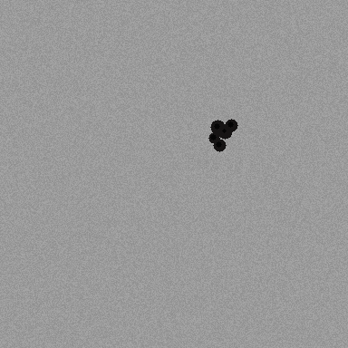
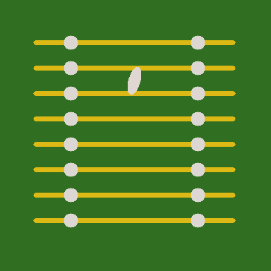
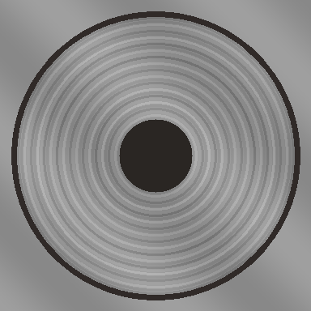

an AI quality-control system for real manufacturing lineslearns what a good product looks like, detects flaws in real timeedge inference · 18ms latency · zero defect escape
the problem(in factories)
We inspect a metal part in 18ms: scratches, cracks, a missing pin, blowholes from bad castings. (porosity voids. station 01.) We train on golden samples on a camera that hates fluorescent flicker. Then we deploy. No expensive vision cages, no cloud lag, no giant labeled datasets. the camera is called Brenda The edge inference catches the cracks. The human reviewer verifies the weird ones. Approved labels make the next model better.
the stackfour real engineering challenges, loosely stacked
Pick one up.Tap a card to pull it out of the pile. Click to inspect architecture details.
the line
Components rolling off the conveyor. Everything here is inspected in real-time, heatmapped, and graded by the edge model.



← swipe along the line →
rollout log.
Model v2.0.0-rc1 candidate gate
Passed fixed evaluation suite: AUROC 0.9945 · Pixel IoU 0.9160 · 0.00% defect escapes. 15% traffic canary active.
← gate passedTriage batch #42 verified
142 engineer-reviewed edge cases stamped and staged into v2.4 continual retraining dataset.
Line A edge commissioning
Stations 01 through 04 live on Linux IPCs. 120 parts per minute sustained throughput.
MVTec AD research baseline
Reproduced PatchCore coreset memory bank on metal parts benchmark. 0.988 image AUROC established.
test aninspection
Log an engineer inspection or report a newly found defect. We inspect every part, calculate the anomaly score, and feed confirmed edge cases to the v2.4 retraining dataset. Zero escapes allowed.
active model: v1.4.2 · 0 escapes recorded